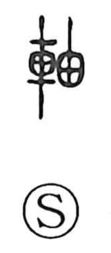

軸

Uncategorized
Kun: | On: jiku
axis ・ axle ・ shaft
Explanation
軸 is a phono-semantic character: the vehicle component signals turning and wheels, while 由 functions as the phonetic. Shirakawa traces 由 back to 卣, a gourd-like vessel whose flesh decays and leaves a hollow rind; from this image of an empty interior comes the idea of a hollow center that revolves. Thus 軸 names the element that turns about its core, notably the wooden roller at the heart of a scroll—hence hanging scrolls (kakemono) are also called kakejiku. The same phonetic 由 appears in 舳, a term for the ship’s end involved in steering (prow or rudder area), again evoking a part that governs direction through an axial function.